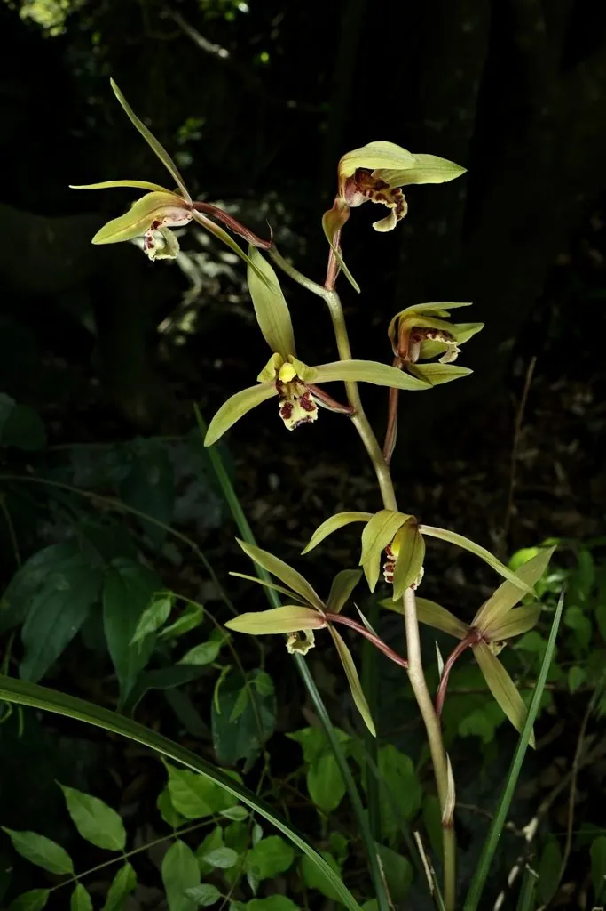

花卉与草本 · 植物界
蕙兰 Cymbidium faberi

兰科兰属多年生地生草本，一葶多花、花香清冽，春季开花，是中国传统国兰“四大家”之一，原产中国中部与西南。
- 分类
- 门被子植物门纲木兰纲目天门冬目科兰科属兰属
- 栖息环境
- 疏林下、溪谷旁的腐殖质坡地，喜凉爽、半阴、湿润
- 地理分布
- 原产中国中部与西南山区，秦岭以南多地有分布
- 保护级别
- 暂无评估；兰属野生种列入中国国家二级重点保护野生植物
物种志
蕙兰为兰科兰属多年生地生草本，假鳞茎不明显，叶片 5–8 枚丛生，带状，长 40–80 厘米，边缘有细锯齿。花葶直立，着花 5–15 朵，花浅黄绿色至黄绿色，唇瓣有紫红色斑点，香气清冽，花期 3–5 月；果实为蒴果。
蕙兰原产中国中部、西南及秦岭以南的山区，常生于疏林下、溪谷旁的腐殖质坡地，喜凉爽、半阴、湿润和通风良好的环境，耐寒性较强。它是中国传统国兰“四大家”之一，一葶多花、花香清冽，古人常把它与春兰并称；野生蕙兰已列入国家重点保护野生植物名录，采挖和买卖野生兰需遵守法规。栽培以透气植料为主，忌积水和强光。
形态与习性
- 株高叶长 40–80 厘米，花葶着花 5–15 朵
- 花期3–5 月
- 果期花后结蒴果
- 光照喜半阴散射光
- 水分喜湿润，忌积水
- 土壤疏松透气、富含腐殖质的植料
- 繁殖以分株为主
- 主要用途国兰观赏、盆栽
趣味知识
- 蕙兰一葶多花、花香清冽，是传统国兰“四大家”之一。
- 它耐寒性较强，多生于秦岭以南的山区林下。
- 野生蕙兰受国家保护，采挖和买卖需遵守相关法规。
- 古人常把蕙兰与春兰并称，视其为兰花中的高品。